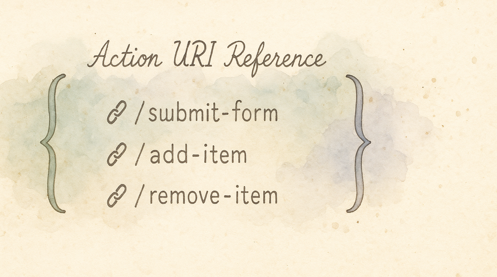

KeyPath uses a URI scheme (keypath://) to trigger actions. This is the technical reference for integrating KeyPath with external tools like Raycast, Alfred, Shortcuts.app, or your own scripts.
If you just want to set up app launching through KeyPath's UI, see the Launching Apps guide instead.
Trigger any KeyPath action from Terminal or any tool that can open URLs:
open "keypath://launch/Safari"
open "keypath://window/snap/left"
open "keypath://notify?title=Deployed&body=Build complete"keypath://launch/{app}Launch an application by name or bundle identifier.
KeyPath resolves app names in this order:
com.apple.Safari)/Applications//System/Applications/~/Applications/open "keypath://launch/Safari"
open "keypath://launch/com.apple.Safari"
open "keypath://launch/Visual Studio Code"keypath://window/snap/{position}Tile the current window to a screen position.
Positions: left, right, top, bottom, topleft, topright, bottomleft, bottomright, maximize, center
open "keypath://window/snap/left"
open "keypath://window/snap/maximize"keypath://layer/{name}Signal a layer change for UI feedback.
Subpaths: /activate, /deactivate, /toggle
open "keypath://layer/nav/activate"
open "keypath://layer/vim/toggle"keypath://notifyShow a system notification.
Query parameters:
title (required) — notification titlebody (optional) — notification body textsound (optional, default: true) — play notification soundopen "keypath://notify?title=Build%20Complete&body=Ready%20to%20deploy"
open "keypath://notify?title=Saved&sound=false"keypath://overlay/{toggle|show|hide}Show or hide the keyboard overlay. Bind it to a key to get a "show me my layout" key.
open "keypath://overlay/toggle"
open "keypath://overlay/show"From a Kanata config, use the short form: (push-msg "overlay:toggle").
keypath://runtime/{start|stop|restart}Turn remapping on or off, or restart it. This does the same thing as keypath start, keypath stop and keypath restart, but reports no result; use the CLI when a script needs to know whether it worked.
open "keypath://runtime/stop" # Pause remapping
open "keypath://runtime/start" # Resume itkeypath://fakekey/{name}Trigger a virtual key press.
Subpaths: /press, /release, /tap
open "keypath://fakekey/vk1/tap"Create a Raycast script command:
#!/bin/bash
# @raycast.title Launch Safari
# @raycast.mode silent
open "keypath://launch/Safari"Use an Alfred workflow "Open URL" action with keypath://launch/{query}.
KeyPath has native Shortcuts integration — no shell scripts needed. Use the "Send KeyPath Action" action directly, or ask Siri to start/stop KeyPath or check your current layer. See the Siri & Shortcuts guide.
You can also use a "Run Shell Script" action:
open "keypath://launch/Safari"Use the KeyPath.spoon to react to layer changes and send actions:
spoon.KeyPath:sendAction("launch/Safari")Chain multiple actions:
#!/bin/bash
open "keypath://window/snap/left"
sleep 0.5
open "keypath://launch/Terminal"
open "keypath://window/snap/right"Action URIs are only processed from local sources:
open command)No network access is required or used. Actions execute with your normal user permissions.
If an action fails (e.g., app not found), KeyPath logs the error but doesn't crash. Check File → View Logs for details. Invalid URIs are silently ignored.